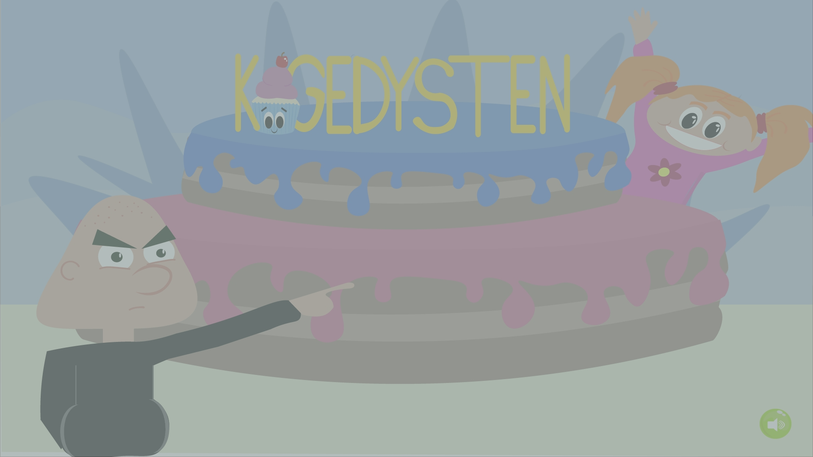

Grundlæggende
animation
I tema 4 “Animation” har vi gennemgået JavaScript og arbejdet med forskellige animationer. Vi har løbende lavet forskellige opgaver, som har hjulpet os til at kunne kode vores eget spil til sidst. Vi har i dette forløb fortsat arbejdet med forskellige design principper og designmetoder, og kodet både med HTML, CSS og JAvaScript. Nedenfor ser i dokumentation for hele forløbet. Udover HTML, CSS og JavaScript har vi også arbejdet i Illustrator. Her har vi selv tegnet alle vores UI-elementer, baggrunde og figur/spil elementer.